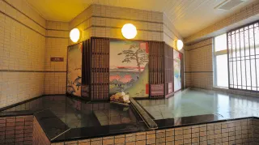
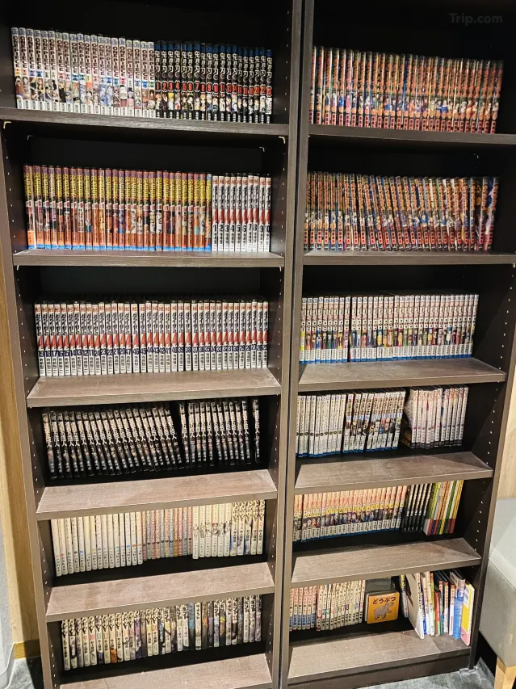
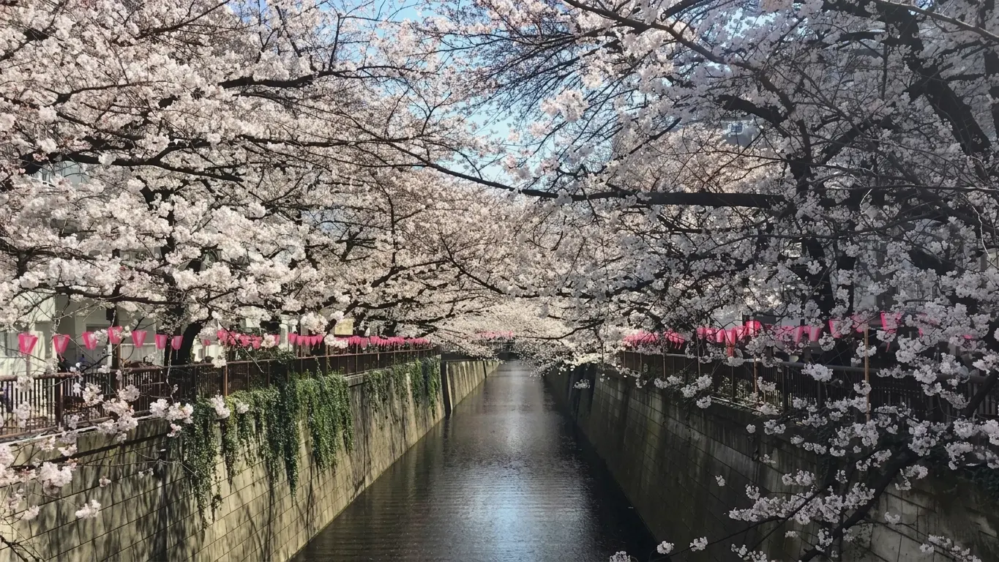
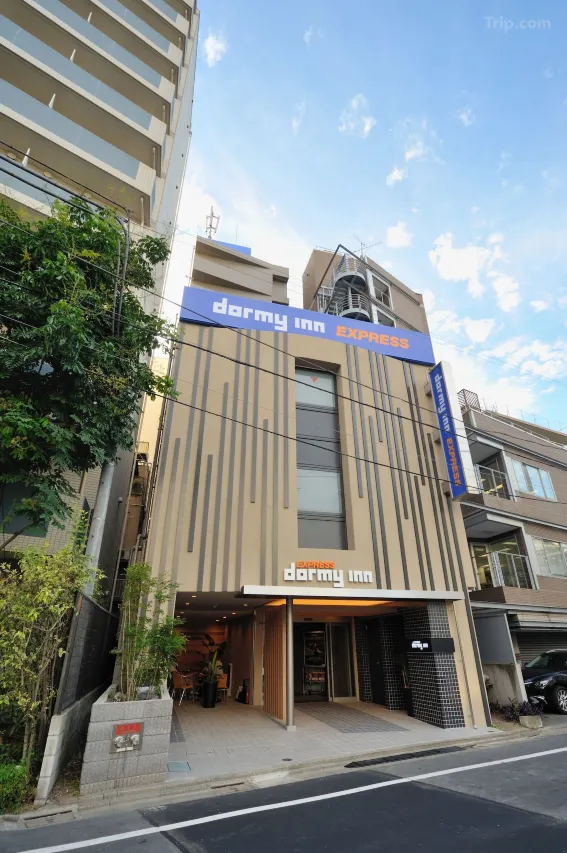
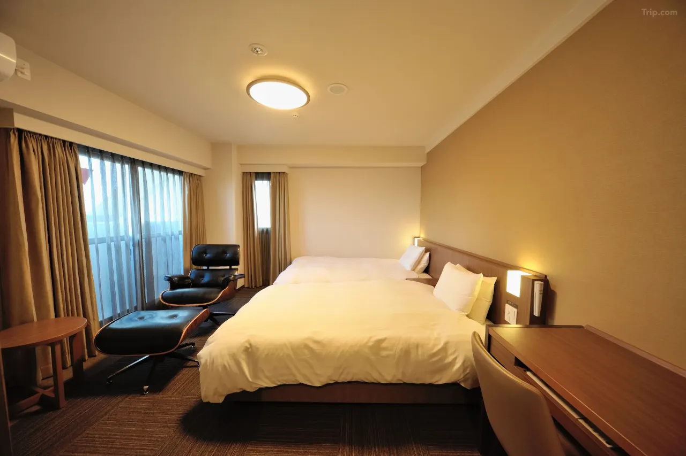
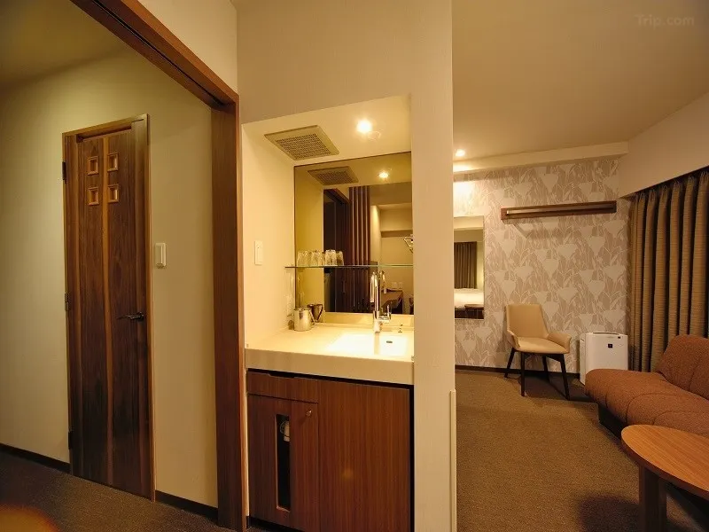
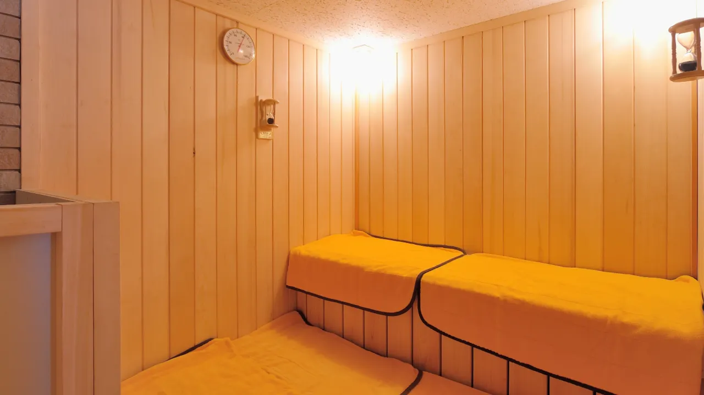
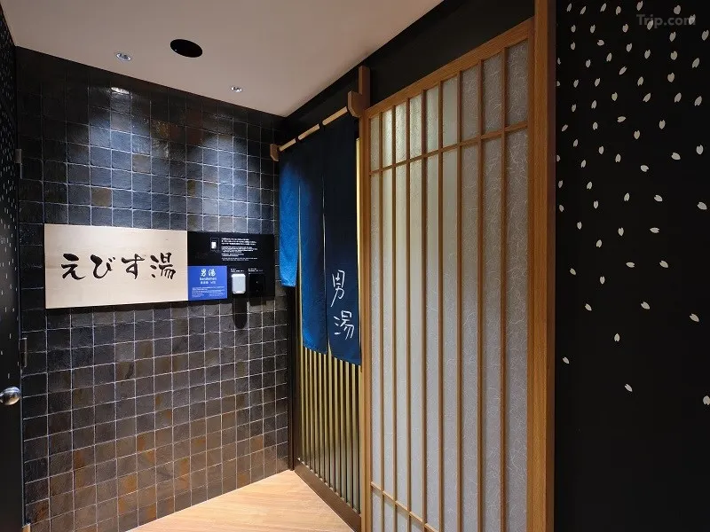

In late March, when approximately 800 cherry trees along the Meguro River come into bloom simultaneously, the stretch of canal running through Nakameguro becomes the most photographed street in Tokyo. The trees arch across the water from both banks, their branches meeting overhead to form a continuous tunnel of pink and white. At night, paper lanterns illuminate the blossoms from below. Food stalls line both sides of the walkway. The crowd is dense and celebratory and moves slowly, because there is no reason to move quickly through a tunnel of cherry blossoms.
Dormy Inn Express Meguro Aobadai is roughly 200 meters from this tunnel. It also happens to be directly next door to the Kengo Kuma–designed Starbucks Reserve Roastery Tokyo — the largest Starbucks on the planet, with a 17-meter copper roasting cask at its center and outdoor terraces positioned precisely to overlook the Meguro River during sakura season. The combination of location, amenities, on-site hot spring baths, and price makes this small hotel one of the most consistently sensible choices in the city for travelers who want to be embedded in one of Tokyo's best neighborhoods without paying for a luxury address to do it.
What Dormy Inn Actually Is

The Dormy Inn chain is a specifically Japanese invention with no real equivalent elsewhere: a business hotel that includes an on-site communal bath (sento or onsen) as a standard amenity, alongside free late-night ramen service and complimentary breakfast. It occupies the category between a capsule hotel and a full-service ryokan — compact, clean, efficiently run, priced for travelers who understand that the room is where you sleep and the bath is where you unwind.
The Meguro Aobadai property has 48 rooms across several configurations — standard singles, doubles, and deluxe twins — all equipped with air conditioning, free WiFi, a safe, a 20-inch LCD television, a refrigerator, a bidet, blackout curtains, and down comforters. The larger deluxe rooms include a kitchen area and an in-room washing machine, making them practical for stays of more than a few nights. The rooms are compact by Western standards but thoughtfully organized; nothing is wasted, and everything necessary is present.
What distinguishes the Aobadai property within the Dormy Inn network is its communal bath, which is decorated with reproductions of Hiroshige's One Hundred Famous Views of Edo — historic Edo-period woodblock prints depicting Meguro and its surroundings as they appeared in the 1850s. The bath itself is a standard sento (public bath without natural mineral content), with a dry sauna, a cold plunge pool, and partitions featuring floral patterns. A private hinoki cypress wood bath is available by reservation for guests who prefer a solo soaking experience. The communal bath operates on a gender-alternating schedule: men on weekday evenings, women on weekend evenings — a schedule worth checking before arrival if the bath is a primary consideration.
After the bath, the Dormy Inn ritual continues with free ice cream available at the bath exit in the evening, and a free probiotic lactic drink in the morning. Late-night ramen — Yonaki Soba, a soy-based noodle broth — is served free of charge nightly between around 9:30 and 11:00 PM in the common area. The combination of a hot bath, a bowl of noodles, and a stack of manga is, arguably, the most Japanese evening a budget hotel in Tokyo can offer.
The Manga Library

This is why the hotel matters to HotelManga readers specifically. Dormy Inn Express Meguro Aobadai maintains an in-house manga library — two large shelves densely packed with several hundred volumes, positioned near the communal bath area so that guests can move directly from the water to a chair and a book. The collection covers a wide range of titles across shonen, shojo, and seinen genres, with series running to multiple volumes — the kind of reading you can sink into for an evening rather than sample for twenty minutes.
The library is smaller than what the chain's flagship properties offer — Dormy Inn Premium locations and the Akihabara branch maintain collections in the thousands — but for a compact riverside hotel in a residential Tokyo neighborhood, the depth is genuine. The books are almost entirely in Japanese, which is standard across the Dormy Inn network. Guests may take volumes to their rooms and read through the night; they are expected back on the shelves before check-out. The library is available to all guests, not restricted to a specific floor or membership tier.
For HotelManga readers, the sequence is straightforward: arrive in the afternoon, check in, change into the yukata provided in-room, take the bath, collect a bowl of free ramen from the common area, pick two or three volumes from the manga shelves, and read until the city goes quiet. The Meguro River is fifty steps from the front door. This is what a manga sleepover in Tokyo actually looks like at the budget end of the market — and it is very good.
The Neighborhood That Justifies Everything

Nakameguro is the neighborhood that Tokyo residents recommend to visitors who ask where Tokyo people actually spend their time. It is not built around a single attraction or tourist landmark. It is built around a river, and the life that has organized itself along both banks of that river over the past few decades: independent coffee shops, vintage clothing dealers, gallery spaces, architecture bookstores, izakaya, and the kind of restaurant that takes reservations three weeks out and seats twelve people.
The Starbucks Reserve Roastery immediately adjacent to the hotel warrants specific mention because it is, objectively, one of the more remarkable buildings a traveler is likely to walk through in Tokyo. Designed by Kengo Kuma — Japan's most internationally prominent working architect, who also designed the Main Stadium for the 2020 Tokyo Olympics — the four-floor structure organizes itself around a 17-meter copper cask decorated with 2,100 handmade artisan copper sakura leaves. The first floor is a coffee bar; the second, a Teavana tea room; the third, the Arriviamo cocktail bar; the fourth, a roasting factory with lounge and event space. The outdoor terraces face the Meguro River directly. During cherry blossom season, the wait for a riverside terrace seat begins before 8 AM.
Ten minutes on foot in the direction of the station brings you to Nakameguro Koukashita — 700 meters of cafes, restaurants, and shops built into the space underneath the elevated train tracks, anchored by Nakameguro Tsutaya Books, which stocks Japanese stationery, design books, and art publications. Daikanyama, Tokyo's most consistently cool residential neighborhood for boutique shopping, is a 10-minute walk in the same direction. Ebisu and its Yebisu Garden Place museum complex — which includes the Tokyo Metropolitan Museum of Photography — is a 15-minute walk south.
Getting Around from Aobadai
The practical geography of this hotel requires some explanation, because the nearest train station is a 10-minute walk rather than the five minutes typical of Tokyo hotel listings. Nakameguro Station, served by the Tokyu Toyoko Line and the Tokyo Metro Hibiya Line, is the primary access point. From Nakameguro, Shibuya is one stop — four minutes. From there, the rest of Tokyo's rail network opens: JR Yamanote Line to Harajuku, Shinjuku, and Ikebukuro; the Metro network to Roppongi, Ginza, and Asakusa.
The hotel compensates for the station distance with several practical options. A direct bus to Shibuya Station stops a short walk from the entrance — bus routes 43, 33, and 31 all pass nearby — making the commute to central Shibuya a straightforward 10-to-15-minute ride without any transfers. Free bicycle rental is available for guests, which transforms the 10-minute walk to Nakameguro Station into a 3-minute ride and opens up the entire Meguro River canal walk as a cycling route. Haneda Airport is approximately 25–30 minutes by taxi or by a combination of bus and train.
Sakura Season and When to Come
The hotel's peak season is late March to early April, when the Meguro River cherry blossoms draw crowds from across the city. At this time, the riverside outside the hotel is transformed: food stalls appear, pink lanterns are strung between the trees, and evening hanami — flower-viewing — gatherings fill every available patch of riverbank. Being able to step directly from the hotel into this scene without planning a commute is the most compelling case for booking Aobadai specifically during sakura season. Prices rise accordingly, and the hotel fills quickly; booking two to three months ahead is advisable for late March stays.
Outside cherry blossom season, the neighborhood retains its character without the crowds. Summer brings fireflies to some stretches of the river and a fresh green canopy over the walkway. Autumn foliage along the Meguro River is less celebrated than the sakura but pleasant enough to justify a walk. Winter, when the hotel is cheapest and the neighborhood quietest, is the time for the public bath and the late-night free ramen, which the Dormy Inn chain serves from 11 PM as a standard overnight amenity — a bowl of tonkotsu or shoyu at midnight being, in this particular context, exactly the right thing.
Practical Information
- Check-in: 3:00 PM Check-out: 11:00 AM
- Rooms: 48 rooms — singles, doubles, deluxe twins; larger rooms include kitchenette and in-room washing machine
- Public Bath: Sento-style (non-mineral) with sauna and cold plunge; decorated with Hiroshige's One Hundred Famous Views of Edo. Note: gender-alternating schedule — men on weekday evenings, women on weekends. Private hinoki bath available by reservation.
- Manga Library: Several hundred volumes near the bath area — shonen, shojo, seinen; mostly Japanese. Take to room, return before check-out.
- Free amenities: Late-night Yonaki Soba ramen (9:30–11 PM nightly) · Free ice cream after bath (evening) · Free probiotic drink (morning) · Bicycle rental · WiFi throughout · Complimentary breakfast included on most plans
- Nearest station: Nakameguro Station (Tokyu Toyoko / Tokyo Metro Hibiya) — 10 min on foot → Shibuya: 1 stop (4 min)
- Bus to Shibuya: Direct bus from stop near hotel — 10–15 min, no transfers
- From Haneda Airport: ~25–30 min by taxi or Keikyu Line + Tokyu transfer
- Sakura season: Late March – early April — book 2–3 months ahead; prices peak during this period
- Tattoo policy: Guests with visible tattoos may not be permitted in public bathing areas
- Price range: From approx. ¥10,000–¥20,000/night (breakfast sometimes included; varies by season)
| Location | 3-21-8 Aobadai, Meguro-ku, Tokyo (directly on the Meguro River) |
| Category | Business Hotel with Hot Spring Bath (Dormy Inn chain) |
| Rooms | 48 rooms — singles, doubles, deluxe twins with kitchenette option |
| Public Bath | Sento with sauna, cold plunge, and hinoki private bath (reservation); Hiroshige artwork throughout |
| Manga Library | Several hundred volumes near bath area — shonen, shojo, seinen; Japanese language; in-room reading permitted |
| Signature Amenity | Free Yonaki Soba ramen (9:30–11 PM) · Free ice cream after bath · Free morning probiotic drink · Bicycle rental · Breakfast (most plans) |
| Next Door | Starbucks Reserve Roastery Tokyo — Kengo Kuma design; 4 floors; river terrace views |
| Nearest Station | Nakameguro Station — 10 min on foot (Tokyu Toyoko / Hibiya Lines → Shibuya: 4 min) |
| Cherry Blossom Access | Meguro River sakura — directly outside the hotel; ~800 trees; late March–early April |
| Price Range | ¥10,000–¥20,000/night depending on season and room type |
| Haneda Airport | ~25–30 min by taxi or train connection |
Photo Gallery

Photo 1
Photo 2
Photo 3'">
Photo 4'">

Photo 6'">Bath, Manga, Ramen, Cherry Blossoms — In That Order
Check availability at Dormy Inn Express Meguro Aobadai — the manga sleepover on Tokyo's most beautiful river walk.